AKN4UN: Modelling Content
This section deals with the modelling of the content of different UN Document Classes. AkomaNtoso supports the following main categories of mark-up:
Structural: the visible/explicit structure of the document, its organization in parts and sub-parts that are either in sequence or contained within each other (e.g. chapter, sections, clauses, etc.).
Semantic: the text within the parts and sub-parts that contains semantically relevant text but that have no specific structural role. This text is relevant because it contains and refer to concepts, facts, people dates, document Number, etc.
Typographical: to mark-up residual typographical characteristics. Please note by residual we mean those specific characteristics that are not already part of structural or semantic mark-up.
General Principles
The AKN4UN “Guidelines” scope is limited to parliamentary, normative, judicial and official documents only. The guidelines define the requirements for the different UN Document Classes, and the rules to be followed by each organization to localise AKN4UN for their specific needs and document types.
AKN4UN defines:
Guidelines for modelling the different UN Document Classes in Akoma Ntoso; and
Rules that UN organizations will have to follow to localise Document Classes to the specific requirements of their own documents. These rules have been set to ensure that the localisation is done in a consistent and uniform manner to provide interoperability of UN documents.
As explained in the previous section, the core principle for the AKN4UN model is the critical distinction between:
Document: “physical document as it appears to the readers in whatever medium it may be”
Logical component: “any logically and functionally distinct component of a document”.
This enables a far more effective reuse of logical components across the entire lifecycle of the document. It also allows recording the complete history of a document and keeping track of any modification that might have happened across its lifecycle.
Model the Content as It Appears in Documents
To the extent possible, the flow of content is maintained in the AKN4UN XML instance in the order it appears when presented in publication.
Leverage Existing Standards
To the extent possible, established XML standards are incorporated into AKN4UN. For example, XHTML 2.0 is used for tables and the Dublin Core 3 is used for metadata.
Element Text vs. Attributes
XML attributes are reserved for metadata and/or normalized representations of the element text. No attribute text should ever appear, as is, in the online or printed presentation of the document.
Generated Content
In general, generated text (e.g. list numbering) is to be avoided in AKN4UN in all documents that may go through formal processing of revisions, like normative documents, resolutions, etc. This rule does not apply to presentation content like headers and footers for printed versions of documents.
XML Elements Must be Placed Strictly Around their Related Information
The XML elements that are marking semantic information must be placed strictly around the relative content and must not include extra characters or words that are not part of the represented semantic.
<person refersTo="">Norma Faber</person>, <person refersTo="">Tullio Bernardi</person>, <person refersTo="">Simon Claeys</person>,...
Not …
<person refersTo="">Norma Faber, </person><person refersTo="">Tullio Bernardi, </person><person refersTo="">Simon Claeys, </person>...
Modelling Languages
AKN4UN follows Akoma Ntoso in the use of the "xml:lang" attribute to mark the language changes inside the document when it is different from the language of the document declared in the metadata (attribute "language" of the element <FRBRlanguage>.
For multilingual documents, the <FRBRLanguage> is "mul" and the "xml:lang" attribute will be used on each structure that encloses text in the same language.
If the "xml:lang" attribute is specified on an element, then all the child elements inherit that attribute. When used, the "xml:lang" must be put at the highest logical element in the hierarchy. The language may be redefined locally to indicate for example that a word in a sentence is in a different language.
NOTE: It is necessary to apply the @xml:lang attribute only to explicitly identify the language within a structure. If the document’s main language is “English”, then it is not necessary to identify the “English” language structures in the document using the @xml:lang attribute, since that is the default for the document. However, if you have a paragraph or a sentence in Spanish within this English document, then you will need to specify the @xml:lang attribute for this Spanish paragraph.
Correlation between XML and Print / Presentation documents
To simplify the rendering process and to ensure that an AKN4UN instance may be effectively reused by all, the whole content that appears in a document must be present in the content part of the XML instances22.
In other words, if all the tags are removed from the CONTENT part of a AKN4UN file, the resulting file will contain at least all the text present in the original logical document (perhaps not exactly in the same order).
Each XML instance must contain its metadata and content and is considered as an independent module with a unique identifier.
Element Categories
Akoma Ntoso uses “patterns” to create categories of content models in schema design to make the schema more modular, flexible and also, quite importantly, more understandable to users. The table below shows how the different basic structures are mapped to different content models.
Table: Akoma Ntoso Basic Structures by content model
Structure | basic structures | content model |
Front matter | <coverPage> | containers |
<preface> | ||
<preamble> | ||
<header> | ||
Main content | <body> | hierarchical structure |
<debateBody> | debate structures | |
<mainBody> | open structures | |
<judgmentBody> | judgment structures | |
<collectionBody> | collection structures | |
<amendmentBody> | modification structures | |
End matter | <conclusions> | containers |
The different structures may use different categories of content models, or we may say families of elements that share the same conceptual organization of the internals. The Akoma Ntoso schema uses six categories of content models that follow the precise form of the relevant category, and all elements may be described and treated according to their category rather than individually.
All basic structure elements, as the name suggests, are purely structural; they do not contain direct text content, only other elements.
It is useful at this point to briefly introduce how the XML Schema language, also referred to as XML Schema Definition (XSD), defines the building blocks of an XML document in order to constrain what may be done and how. The main features of XML documents are defined by the two main types of elements: complex elements and simple elements.
Simple elements: contain only text. It cannot contain any other elements or attributes. | ||
Simple Elements | The XML elements below, e.g. <akn4un:workflowCode> contains only text. It cannot contain any other elements or attributes. In this example it is a proprietary element that holds some system specific metadata code. <akn4un:workflowCode>WF273</akn4un:workflowCode> | |
Complex elements: contain other elements and/or attributes. | ||
Empty Elements: | The AKN element <eol> cannot have contents, only attributes. <eol breakat="4" /> | |
Elements Only: | The AKN element <paragraph> contains only other elements (no text) <paragraph> | |
Text-Only Elements; | The AKN element <person> contains only simple content and may have attributes, it may also have formatting elements for the text within. <person refersTo=”#MrSmith”>Mr John Smith</person> | |
Mixed Content: | The AKN element <p> contains both text and other elements: <p> | |
Akoma Ntoso builds on top of the typologies above and uses patterns to create categories of content models to make the schema more modular, flexible, and understandable to users. It uses six families of elements that share the same conceptual organization. This means that all elements may be simply described and treated according to their category rather than individually. These categories are:
Hierarchies: these are a set of structural section elements nested to an arbitrary depth, usually provided with title and numbering elements (<num> <heading> <subheading>). They follow a purely structural hierarchical content model, i.e. their purpose is only to give structural form to the document and not store any content directly. Hierarchical elements may have other nested hierarchical elements. Each level of the nesting may contain either more nested containers but no text is allowed directly inside the hierarchy, only within a block element that is contained within a container element.
Containers: these are elements that group and hold other elements, some of which may be optional, and may be both content and metadata. The container may be used with a cumulative name to the contained elements. Unlike hierarchical elements, there is no provision of hierarchy or levels. Each container is specific for a purpose, e.g. <meta>, <preamble>, <attachments> are examples of containers. Content text within containers appears within other block elements.
SubFlows: these elements are used to identify a completely separate context that, for any reason, appears within the flow of the text, but does not belong to it or does not follow its rules. SubFlow elements (e.g. <embeddedStructure>) may contain an entire document structure, or a part of a document, as necessary. They cannot contain text directly within themselves.
Blocks: these are containers of text or inlines (see below) and placeholders. They follow a mixed content model which permits text mixed with inline elements. Examples of blocks are paragraphs of text, that are organized vertically on the display (i.e. has paragraph breaks). Most blocks in Akoma Ntoso are based on the HTML language. There is only one content model that uses blocks, and it allows a repeatable selection of all available blocks. This means that wherever any block is allowed, all blocks are allowed, as well: e.g. wherever a paragraph is allowed (<p>.), a table or a list is also allowed.
Inlines: these elements are used to identify a text fragment as relevant for some reason. There are both semantically relevant inlines and presentation oriented inlines. They follow a mixed content model i.e. by allowing both text and elements within themselves.
Markers: these are placed in the document for the meaningfulness of their position, their names and their attributes. They belong to the “empty element” model. There are two main families of markers in the Akoma Ntoso schema:
placeholders in the text content (e.g. note references, end of line tag) that may appear in any position that also has text, and
metadata elements that only appear in some subsection of the <meta> section. In Akoma Ntoso, all metadata elements are markers, so that metadata values are not part of the text content of a document, but rather become attribute values.
Please note that:
The <li> element allows both inlines and other nested lists (<ul><ol><li>).
There are some inline elements that only make sense in the preface and/or preamble of the document: for instance, there are <docTitle> and <docNumber>, for documents such as treaties, conventions, laws, or for judgments, even though technically the schema may permit their usage elsewhere
Basic Structures
In Akoma Ntoso, all document types share the same basic structures and, to a different degree, the same organization of content: <coverPage> <preface> <header> <preamble> <{body elements of the different document types}> <conclusions> <attachments>. Different documentTypes, may use different sets of “basic structures”. All these elements below are purely structural in nature, they contain only other elements, not direct text content.
The table below shows the structure of an Akoma Ntoso document and explains the functions of the different basic structures.
Table: Akoma Ntoso basic structures
metadata | <akomaNtoso> | namespace IRI is: http://docs.oasis-open.org/legaldocml/ns/akn/3.0/WD1723. If and when it might be useful to use a prefix, the preferred prefix is akn. |
<{documentType}> | AKN4UN Document Class AKN document type Normative Documents: <bill> <act> Deliberative Documents <statement> Administrative Issuance <statement> Meeting Agenda <debateReport> Meeting Reports <debateReport> Communications <doc> Papers <doc> Meeting Records <debate> Court Decisions <judgment> Modificatory Instructions <amendment> Publications: Official Records <officialGazette> Publications: List of Amendments <amendmentList> Publications: Standalone and Compilation <documentCollection> | |
<meta> | Contains metadata, information of the document that identifies, qualifies and classifies the text as a whole or as individual fragments. | |
front matter | <coverPage> | Contains information about typical cover pages (mastheads), such as the name of the publisher, serial number, issuing authority, legislature or session number, etc. |
<preface> or <header> for <judgment> | Contains the information identifying the document as it appears visually in print or online; all the content at the very beginning of a document, e.g. document name, title, number, authors and/or sponsors, and date among other things. And it may also contain content that may be considered, in common drafting parlance, a “preface”. | |
<preamble> | Contains the introductory part of a document stating its purpose, aim and justification, such as introduction, motivation, purpose, or legal basis of a document. | |
main content | <{main content}> | Contains the main content of a document and it is characterised by structural complexities that may vary depending on the document’s typology and purpose. AKN4UN uses the following types of “main content”: <body> hierarchical structures: <bill> and <act> <debateBody> verbatim structure: <debate> <mainBody> open structures :<debateReport>, <statements> and <doc> <amendmentBody> modification structure: <amendment> <judgmentBody> judgments structure: <judgment> <collectionBody> collection structure in <documentCollection>, <officialGazette>, <amendmentList> |
end matter | <conclusions> | Contains the closing formulas, the date and signature when applicable. |
additional matter | <attachments> | Contains informative or technical data which, for practical reasons, does not appear in the body of the document or independent documents that may be approved, endorsed or relevant for the main document attached to it. |
Caveats: we have to be aware that some of AKN elements are used to mean different things than in their common meaning. In particular, we would like to highlight that:
<preface> does not correspond to the term “preface” (i.e. an introduction typically stating the document's subject, scope, or aims.) but more generally contains any matter found at the beginning of a document. This often includes the document name, number, authors or sponsors, and the long and short title and it may also contain content that may be considered, in common drafting parlance, a “preface”.
<preamble> some documents like decisions or resolutions may not have a distinct preamble, but just clauses which may be considered “preambular” in the legal sense. <preamble> is intended to contain only such “preambular” text or clauses.
<conclusions> does not correspond to the term “conclusion” (i.e. the last main division of a document usually summing up of key points) but more narrowly should be used to contain all concluding material (e.g. dates, signatures, closing formulas, etc.). For documents that may have a part name “conclusion” you may use a generic block or hierarchical container and give it the name “conclusion”.
Hierarchical Elements
AKN Hierarchical Elements
Hierarchical elements belong to a purely structural content model, no text is allowed directly inside them. The Akoma Ntoso standard is neutral with respect to the legal drafting traditions and provides most of the hierarchical elements for modelling the body structure in a very precise way without prescribing any fixed order for the different hierarchical elements. The supported hierarchical containers are:
<alinea>
<article>
<book>
<chapter>
<clause>
<division>
<indent>
<level>
<list>
<paragraph>
<part>
<point>
<proviso>
<rule>
<section>
<subchapter>
<subclause>
<subdivision>
<sublist>
<subparagraph>
<subpart>
<subrule>
<subsection>
<subtitle>
<title>
<tome>
<transitional>
NOTE: the <title> element should to be confused with the <docTitle>, <longTitle> or <shortTitle> which are inline elements mainly used in the <preface>.
AKN4UN Hierarchical Structures
To support some degree of harmonisation among a variety of different ways to name hierarchical parts, in the table below, taking into consideration the citation methodology used in different organizations (e.g. citations like: paragraph 14 of section IV of its resolution 67/246), we have organised AKN elements into a structured hierarchy.
However, if the local hierarchical sequence tradition of an organization is different, it is appropriate to use the hierarchical element corresponding to the local tradition. For example, if Section is a higher-level partition than a Part in your organization, you should use the <section> in that way, with the <part> below it.
Based on the hierarchical level of the document we have divided the elements in the body of the document into 3 different levels: Higher Sub-divisions, within that Basic Units, and within that Lower Sub-divisions.
AKN elements | Semantic association with the text | Motivation |
Higher Sub-divisions | ||
<book> | Used for grouping different tomes | <book> is the upper partition |
<tome> | Used as grouping level of parts | <tome> is element for the hierarchical container called "tome" either explicitly or due to the local tradition |
<part> | Used as grouping level of sections | <part>is the element for hierarchical container called "part" either explicitly or due to the local tradition |
<section> | Used as first level subdivision, usually with roman numbers | Use this element for the hierarchical container called "section" either explicitly or due to the local tradition |
<title> | Used as a second level in subdivision, usually with capital letter numbering. | <title> should be used for grouping other hierarchical structures |
<chapter> | Used as second level in subdivision, usually with Arabic number | <chapter> usually is closer to the basic unit of content |
<division> | Numbered or Unnumbered headings | <division> is used as a generic partition it may be numbered or unnumbered. |
Basic Units | ||
<article> | Used as last level in subdivision, usually with Arabic number | <article> is used as last level in subdivision called "article" either explicitly or due to the local tradition |
<rule> | Used as last level in subdivision, usually with Arabic number | <rule> is used as last level in subdivision called "rules" either explicitly or due to the local tradition |
<paragraph> | Basic unit numbered | <paragraph> is used for basic units called "paragraph" either explicitly or due to the local tradition |
<clause> | Basic unit numbered | <clause> is used for basic units called "clause" either explicitly or due to the local tradition |
<alinea> | Can be used for unnumbered subdivisions of a paragraph that are not lists | <alinea> is used when in hierarchical documents you have a structure made up of numbered paragraphs in which one of the paragraphs is not numbered |
Lower Sub-divisions | ||
<subsection> | Can be used to group sub-paragraphs without final text | <subsection> groups paragraphs with headings |
<subparagraph> | Can be used for unnumbered subdivisions of a paragraph that are not lists | <subparagraph> is a sub-division of paragraph |
<list> | This is an element used to introduce a list, in which each item will be a “point”. See below | <list> represents a numbered list, with any kind of numbering (Arabic number, literals, roman number, etc.). Note: list numbering may be different in other languages, see Multilanguage exceptions |
<point> | This is an element for content in the list element. e.g. 1st degree subparagraphs: lower-case letters between parentheses: (a) | (b) | (c)) 2nd -degree subparagraphs: lower-case roman numerals between parentheses: (i) | (ii) | (iii) | <point> is used to represent items in a list |
<indent> | The very last structural element in case it is necessary to indent | <indent> is the sub-division of a point or of an alinea or of a paragraph. Indent is used for text that should appear indented, especially if the indentation has a conceptual meaning (e.g. sub arguments list). |
NOTE:
In actual documents, you will use only a subset of the elements of the table above. You could also have very simple documents that have only a higher subdivision element.
Hierarchical containers may be used in most Akoma Ntoso document types (except debate), whenever there is some kind of hierarchical organization of content.
We have also some exceptions (e.g., "point" may also be a "basic unit" and "paragraph" is often a sub element of section or article). For these reasons, we need subschema rules for managing the prescriptiveness of the use of those element in appropriate manner according to the type of document.
Hierarchical Content Model
Hierarchical elements provide structure to a document, and may contain either more nested hierarchical containers or containers for content. No text is allowed directly inside the hierarchical element.
Headings
The Higher Subdivision elements (e.g. parts, sections, chapter, etc.) group the Basic Units (e.g. paragraph, alinea) of the document. They may have Roman or Arabic numbers or letters to identify them and may or may not have a title.
The heading of a level of all hierarchical containers may be made up of a number of elements in a variety of configurations. There are three elements that are important:
<num> ― (optional) This element contains the alphanumeric designation assigned to the level.
<heading> ― (optional) This element contains a primary heading.
<subheading> ― (optional) This element contains a secondary heading and should only be used in conjunction with a primary heading.
All three of these elements are optional and the order is unspecified. This is to support the variety of headings found in documents. Some examples of heading configurations you might encounter include:
<num> <heading>
<num> <heading> <subheading>
<num>
<heading> <num>
<heading> <num> <subheading>
For hierarchical levels that contain sublevels, the possible organization may have this structure:
<{levelName}>
<{num}> </{num}>
<{heading}> </{heading}>
[<intro>]
<{subLevelName}>...</{subLevelName}>
...
[<wrapUp>]
</{levelName}>
Generally:
<intro> (optional) is used to contain some introductory text followed by either a ':' or an '―' (em-dash).
<wrapUp> (optional) element is used to include trailing text that often follows a series of level elements.
Basic Units
The numbered paragraph or clause is the most common subdivision of the last higher subdivision element and will be always marked with:
The <paragraph> or <clause> elements. The number will be marked with the <num> sub-element.
The <alinea> is an odd “paragraph” that appears unnumbered within a numbered hierarchy. These are paragraphs or subdivisions of a paragraph that are not lists.
In some legal traditions <subsection> may be used to group <paragraph> or <clause> with headings.
In the next section, we deal with most general cases of subdivision of “paragraphs” and numbered and unnumbered lists.
Numbered and Unnumbered Lists
Lists typically appear in lower subdivisions. However, because of their extensive and varied use, we have expanded them into a more detailed section here.
Lists are a number of connected items written consecutively, typically one below the other, which may have further nesting branching off from each item in the list.
Typically, there is an initial part which is used to contain some introductory text followed by either a ':' or an '―' (em-dash). There might be trailing text that often follows a series of level elements. Usually the opening text, the list items, and the closing text are all written in the form of a single sentence as follows:
The following items (opening text):
(a) the first item;
(b) the second item; and
(c) the last item
are written as a single sentence (closing text).
Lists may be either numbered or unnumbered, to mean that they may be ordered using a numbering scheme (numeric, alphabetical or roman) or just graphical elements (e.g. bullets, dashes, etc.). In hierarchical elements, “lists” must be modelled using the <list> element that may contain one of the following: : <intro> and <point>.
The use of HTML inspired lists (<ol> and <ul>) is not allowed in normative and deliberative documents and it is strongly discouraged in all documents.
A list may appear under an article, a paragraph, a point or an indent. An example is shown below:
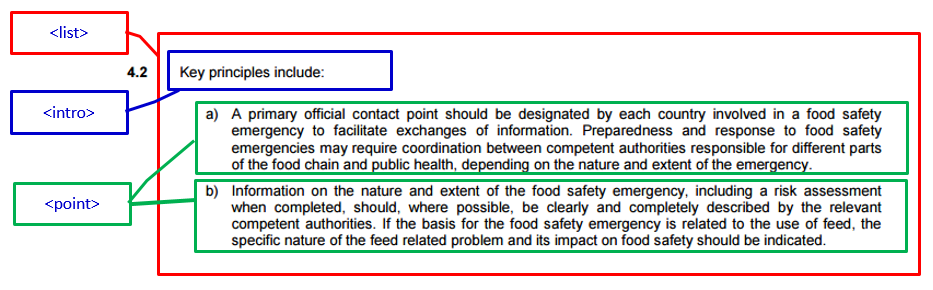
The <list> element may contain one of the following:
one <intro> (optional) sub-element introducing the list, generally ending with a colon (":").
only one of the following:
a sequence of <point> elements
a sequence of <indent> elements
a sequence of <sublist> elements
one <wrapUp> (optional) sub-element, starting generally with a lowercase character, which contains the text of the list’s conclusion.
The XML skeleton containing the example above will be:
<paragraph eId="...para__4-2__list_>
<num>4.2</num>
<list eId="...para__4-2_list_1" >
<intro eId="...__list__1__intro">
<p>Key principles include:</p>
</intro>
<point eId="...para_4-2__list_1__point_a">
<num>(a)</num>
<content eId="...para_4-2__list_1__point_a__content">
<p>a) A primary official contact …</p>
</content>
</point> <point eId="...para_4-2__list_1__point_b">
<num>(b)</num>
<content eId="...para_4-2__list_1__point_b__content">
<p>Information on the nature and extent….</p>
</content>
</point>
</list>
</paragraph>
Lists with content outside the points or indents
There may be cases where a list contains text outside its points or indents. An example is shown in the screenshot below:
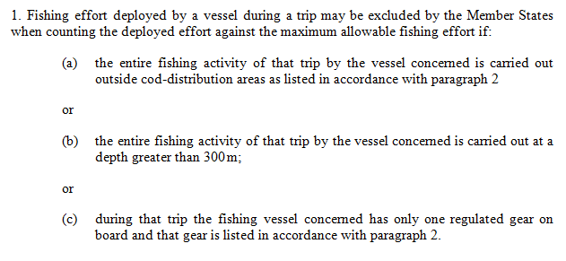
The structure is a paragraph containing a list with points. Between the points there is the word “or”, which is part of the list’s content but does not belong to its points.
The XML skeleton of the structure will be:
<paragraph>
<num>1</num>
<list>
<intro>
<p>...</p>
</intro>
<point>
<num>(a)</num>
<content>
<p>...</p>
<p class="noindent">or</p>
</content>
</point>
<point>
<num>(b)</num>
<content>
<p>...</p>
<p class="noindent">or</p>
</content>
</point>
<point>
<num>(c)</num>
<content>
<p>...</p>
</content>
</point>
</list>
</paragraph>
Lists inside points or indents
Lists may exist also inside points or indents. In the example below, the point (which also belongs to a list) contains a list with indents and an extra unnumbered paragraph.
The list that is included in the first part of the point’s content has an introductory and a conclusion parts.
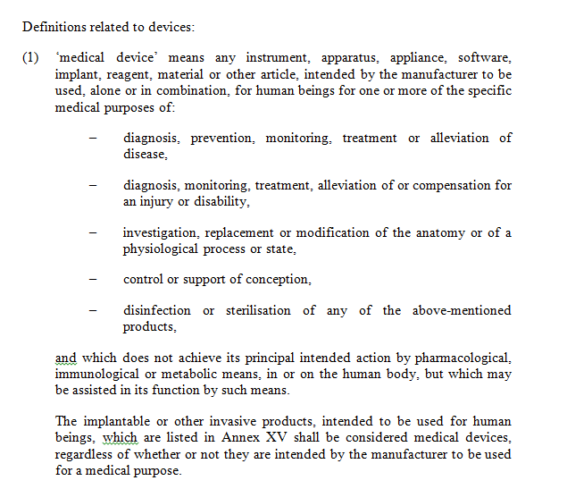
The XML skeleton of the structure will be:
<list>
<intro>Definition related to devices:</intro>
<point>
<num>(1)</num>
<list>
<intro><p>'medical device' means any...</p></intro>
<indent class="dashPrefix">
<content><p>diagnosis, prevention, ...</p></content>
</indent>
...
<wrapUp><p>and which does not achieve its...</p></wrapUp>
</list>
<wrapUp>
<p>The implantable or other...</p>
</wrapUp>
</point>
</list>
Lists inside paragraphs
Lists may appear inside paragraphs, mixed with subparagraphs. In the example shown below, the paragraph contains two sub-elements: a list and a subparagraph.
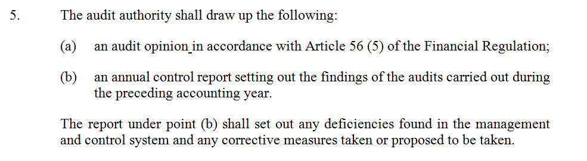
In the above example, we have a list followed by a paragraph that it is not part of the list. In this case, the <list> element is followed by an alinea (<alinea>) or a a subparagraph (<subparagraph>) depending on the legal tradition. The XML skeleton AKN4UN mark-up for the above example will be:
<paragraph>
<num>5</num>
<list>
<intro>
<p>The audit authority shall...</p>
</intro>
<point>
<num>(a)</num>
<content>
<p>an audit opinion ...</p>
</content>
</point>
<point>
<num>(b)</num>
<content>
<p>an annual control ...</p>
</content>
</point>
</list>
<alinea>
<content>
<p>The report under point(b) shall ...</p>
</content>
</alinea>
</paragraph>
Example
We present below an example of an article with three paragraphs:
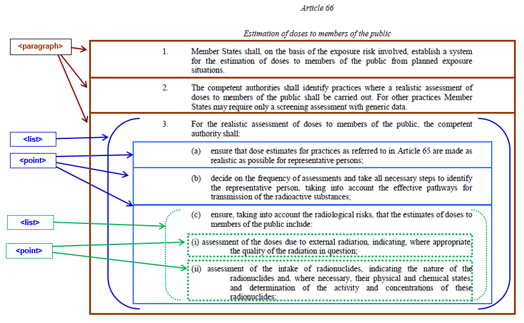
The AKN4UN representation is displayed below:
<article eId="..."><num>Article 66</num>
<heading eId="...">Estimation of doses to members of the public</heading>
<paragraph eId="..."><num>1.</num>
<content eId="...">
<p>Member States shall, on the basis of the exposure risk
involved, establish ...</p>
</content>
</paragraph>
<paragraph eId="..."><num>2.</num>
<content eId="...">
<p>The competent authorities shall identify practices where a
realistic ...</p>
</content>
</paragraph>
<paragraph eId="..."><num>3.</num>
<list eId="...">
<intro eId="..." >
<p>For the realistic assessment of doses to members of the
public, the competent authority shall:</p>
</intro>
<point eId="..."><num>(a)</num>
<content eId="...">
<p>ensure that dose estimates for practices as referred to
in Article 65 ...</p>
</content>
</point>
<point eId="..."><num>(b)</num>
<content eId="...">
<p>decide on the frequency of assessments and take all
necessary steps ...</p>
</content>
</point>
<point eId="..."><num>(c)</num>
<list eId="...">
<intro eId="...">
<p>ensure, taking into account the radiological risks,
that the estimates of doses to members of the public include:</p>
</intro>
<point eId="..."><num>(i)</num>
<content eId="...">
<p>assessment of the doses due to external
radiation, indicating, where</p>
</content>
</point>
<point eId="..."><num>(ii)</num>
<content eId="...">
<p>assessment of the intake of radionuclides,
indicating the nature...</p>
</content>
</point>
</list>
</point>
</list>
</paragraph>
</article>
Text Content Model
The leaf element of a hierarchy which contains the actual text of a document is the <content> element. The <content> element is typically used in hierarchical documents as the last element in a hierarchy that contains basic text content. The appearance of a <content> element in a hierarchical container implies that there is no further hierarchy in the document, apart from <block>s or <blockList>s within the <content> element.
The <intro>, <wrapUp> and <content> elements follow the same content model. They allow representing text paragraphs using:
The <p> elements, or <block> elements where there is need to qualify the typographical paragraph using the @name attribute.
Text lists should be represented using the <blockList> element.
Tables using the <table> element
Table of contents using the <toc> element. See next section for more details on this element.
The <foreign> element for container for elements that do not belong to the Akoma Ntoso namespace.
Figure: Hierarchical content model
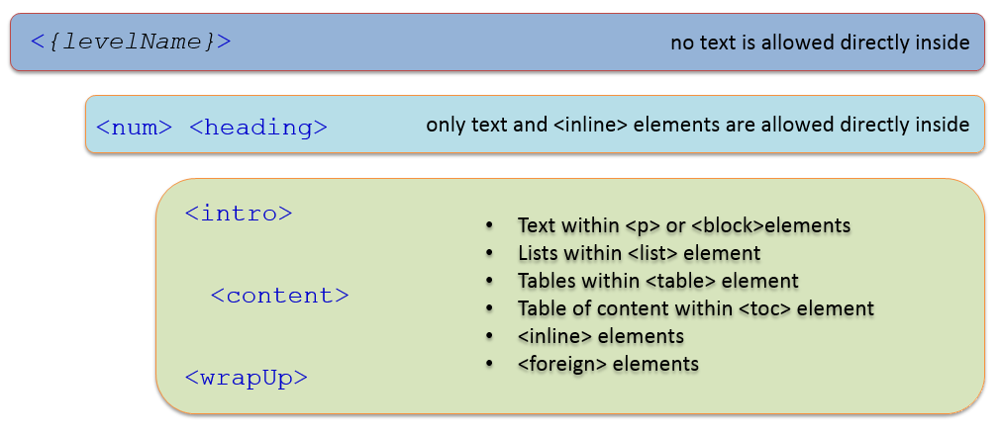
For example:
<paragraph eId="title_1__para_1">
<num>1.</num>
<content>
<p>The 154<sup>th</sup> Session of the Council was held in Rome
from 30 May to 3 June 2016 under the Chairpersonship of Mr Wilfred
Ngirwa, Independent Chairperson of Council.</p>
</content>
</paragraph>
NOTE: As you may see above, there is no further hierarchy below the <paragraph> element. The <content> element supports all the block elements described above like <block>, <blockList>, <blockContainer>. etc., and the typographical paragraph tag <p>.
Container Elements
Container Groups
The different types of elements used within container elements have been categorized here based on the parent element they are found within.
Preface Containers
Preface container elements are container elements which are specific to the Akoma Ntoso <preface> vocabulary,
<container>
<formula>
<longTitle>
These elements may also be used in <coverPage> and <conclusions> in the same way.
Preamble Containers
Preamble Container elements are container elements specific to the Akoma Ntoso <preamble> vocabulary.
<citations>
<container>
<formula>
<recitals>
Speech Containers
Speech container elements lists the structures that should contain speeches.
<address>
<adjournment>
<administrationOfOath>
<communication>
<debateSection>
<declarationOfVote>
<ministerialStatements>
<nationalInterest>
<noticesOfMotion>
<oralStatements>
<papers>
<personalStatements>
<petitions>
<pointOfOrder>
<prayers>
<proceduralMotions>
<questions>
<resolutions>
<rollCall>
<writtenStatements>
Containers Content Model
There is no expectation of numbering or levels with containers, neither is there any typical expectation of headings. Containers are primarily for mixed content elements where text is interspersed with elements.
The most commonly used element inside a container element will be one of the block elements:
<p> a typographical paragraph element.
<block> this is essentially a typographical paragraph element which may be named via the @name attribute. It supports all the inline mark-up possible inside a typographical paragraph.
<blockList> this is a numbered list of block elements. See Numbered and Unnumbered Lists.
<blockContainer> this is a container for other block elements (like <block>, <blockList>, <tblock> and even other <blockContainer> elements, typically used to group multiple block elements. . It may include also <componentRef>.
<tblock> this is a block element that starts with a heading (using the <heading> element). It may contain other block elements, and also typographical paragraphs (<p>).
Container elements may also contain “tables” using the <table> element, more details in section 4.11
Container elements may also contain “tables of content”. These are typically represented using the table of content tags:
<toc> - this is a purely structural tag that contains multiple <tocItem> elements which represent individual table of content items.
<tocItem> - this is a block element used to hold the text of the table of content item. It may contain all the typical inline elements supported by AKN. The <tocItem> has two attributes:
@href which specifies an IRI to the part of the document being referenced by the <tocItem>.
@level element which may be set to an integer value to specify the level of the item being referenced. This @level may be used to appropriately indent the <tocItem> when presenting the table of contents.
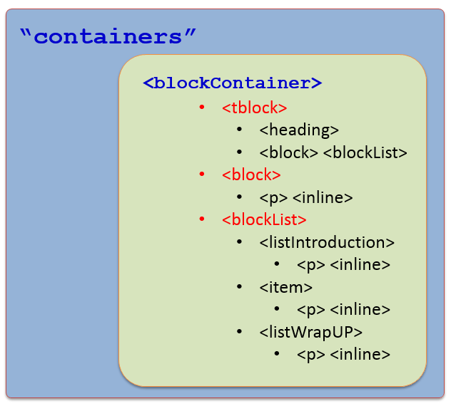The Figure below depicts the container content model. Note that you may have any of the block elements as the main element within a container (instead of <blockContainer>).
Figure: Containers content model
Container Lists
In <containers>, “lists” must be modelled using the <blockList> element that may contain one of the following:
<listIntroduction> - the list introduction is marked using this element. The introduction typically contains the leader text for the list, is not numbered and ends with “:” or “—“.
<listWrapUp> - this is used for the text (if present) after the list of items in the list.
<item> - this contains the item of the list, and is an element similar to the <content> container. It may be numbered, and in such cases, the first element must be the <num> element. It supports typographical paragraphs (<p>). <item> may also contain <blockList>, a mechanism that effectively allows nesting lists to as many levels as needed.
Each item of the list is marked using the <item> element.
Example:
<blockList eId="...__list_1">
<listIntroduction eId="...__list_1__intro"> The Commission conducted an impact assessment of
policy alternatives, taking into account the consultation of interested parties and the
results of external studies. The impact assessment concluded that the following solution
would be preferred:</listIntroduction>
<item eId="...__list_1__item_1">
<num>1</num>
<p>a more graduated and better targeted set of restriction measures on new psychoactive
substances, which should not hinder the industrial use of substances.</p>
</item>
<item eId="...__list_1__item_2">
<num>1</num>
<p>restriction measures should be introduced earlier and substances suspected to pose
immediate public health risks should be subjected to temporary restrictions.</p>
</item>
<listWrapUp eId="...__list_1__wrapup">finally we have …</listWrapUp>
</blockList>
Inline elements
Inline elements are used to identify a text fragment as relevant for some reason. There are both semantically oriented inlines and presentation oriented inlines. AKN inlines belong to the “mixed content” model, i.e. those that allow both text and elements.
Akoma Ntoso specifies several different inline elements for marking up content that is presented on the document. There are a number of what we may call “qualified” inline e.g. <docType>, <organization>, <time>, etc.
There will be cases and situations of semantic relevant content that are not covered by Akoma Ntoso inline elements. For these situations, AKN has the generic <inline> to be used whenever a word or a short string of the content of the document is thought relevant to be identified, e.g. the original language or the year of adoption of a document.
Inline elements may be placed inside a block or any of the other inlines. In this example, we have <docTitle> inside <docAuthority>:
<docTitle>
Allocation of agenda items for the seventieth session of the
<docAuthority>
General Assembly
</docAuthority>
</docTitle>
The @name attribute is required for the generic <inline> element. By using different values for the @name attribute, one may therefore introduce as many new elements as needed, generating a de facto extension of the schema without the need to introduce new code in the XSD.
<inline name="subTitle">
Adopted by the General Assembly at its 2nd plenary meeting
</inline>,
Both qualified and generic elements may use @refersTo to further qualify an element via reference to a TLC in the <reference> section of metadata.
For example, the mark-up of “CL 143/1” as <docNumber>:
<docNumber>CL 143/1</docNumber>
It is possible that a document may have also a publication number, in such situations <docNumber> may qualify the number via a concept class:
<docNumber refersTo="#publicationNumber">15-143-1-E</docNumber>
That is qualified in the metadata with reference to the relevant TLC:
<meta>
(..omissis..)
<references>
(..omissis..)
<TLCConcept eId="symbol" href="/ontology/akn/document/publicatonNumber" showAs="publication number" />
</references>
</meta>
The above is a concept class that describes a “publication number”, so now we may identify the marked up number as a “publication number” by connecting the number to the concept through the @refersTo attribute.
All inline elements may use the @refersTo attribute to associate the element to its top-level class element in the ontology and some do actually require it.
Please see Annex II (see <inline>: @name values) for a list of AKN4UN value @name attribute of <inline> element.
The value of the @name of the <inline> element must not be a name of an existing element and must be prefixed with “akn4un:”. The definition of the AKN4UN <inline> element @name values is provided in the Annexes section (see <inline> : @name values, page 209)
Each element that is related to the metadata must point to its associated metadata using the @refersTo attribute.
Each element may be related only with one metadata. Multiple relationships must be expressed using multiple tags. Examples:
The <docIntroducer> contains a single <person> element that describes the author of this amendment. The <person> element must point to the specific person in that metadata entry.
This proposal has been introduced by <docIntroducer><person refersTo="id_person" >Roberta Angelilli</person></docIntroducer>.
NOTE: the <span> element has a similar function to the <inline> element, but its use must be restricted to purely typographical scenarios. For semantic identification use <inline> with @name, and for typographical representation use <span> with @class.
As there are many inline elements in AKN, we have grouped them logically for easier understanding.
General Inline
These are general inline elements defined in the AKN vocabulary of elements. These are all semantic, though some of them (<ins>, <del>, <fillIn>) are both semantic and presentation elements, as their usage implies a particular way to display the marked-up information:
<decoration> | used to mark a purely decorative aspect present in the text. |
<del> | text is marked as an editorial deletion. This may imply a presentation aspect, e.g. show text with strikethrough. |
<fillIn> | used to indicate an item to be filled in a printed form. |
<ins> | used to indicate that the text has been editorially added. This may imply a presentation aspect, e.g. text shown in blue. |
<mmod> | used to group multiple modifications of a document together. |
<mod> | found typically in amendment documents, used to indicate that the contained text has been modified. |
<omissis> | used to redact from the presentation certain sensitive text from the document. |
<outcome> | used to mark-up outcomes. May be used with @refersTo to clearly identify the outcome. |
<placeholder> | used in documents which are being edited to identify parts of the document where information is incomplete or still missing. |
<remark> | used to identify editorial remarks (applause, laughter). |
<vote> | used to record votings. |
<ref> | IRI reference. |
<mref> | used to group multiple <ref> reference elements. |
<rmod> | used to specify modifications over a range. E.g. change the word tiger to lion in all the headings. |
<rref> | used to group a range of references. E.g. from sections 1 to 4. |
subFlowStructure
<embeddedStructure> | inline element used to embed other document structures. |
<embeddedText> | inline element used to embed other document text. |
Title Inline
These inline elements are to be used for marking-up information in the titutlar parts of the document (<preface>, <header>, <coverPage>). They are purely semantic in nature and do not imply any presentation style:
<docAuthority> | marks the name of the authority to which the document was issued. |
<docCommittee> | marks the name of the committee within which the document originated. |
<docDate> | official date of the document. |
<docIntroducer> | marks the name of the person introducing the document. |
<docJurisdiction> | marks the text identifying the jurisdiction of the document. |
<docketNumber> | docket / case file that the document belongs to. |
<docNumber> | official number of the document. |
<docProponent> | marks the text containing the name of the proponent of the document. |
<docPurpose> | marks the text identifying the purpose of the document. |
<docStage> | marks the text containing the stage the document is at (this should be analogous to <workflow> as recorded in metadata). |
<docStatus> | marks the text identifying the status of the document (this is analogous to <lifecyle> as recorded in the metadata). |
<docTitle> | title of the document. |
<docType> | the text in the preface identifying the type of the document. |
<legislature> | marks the text identifying the legislature, typically associated with a TLCEvent to identify a specific legislature. |
<session> | current session of the legislature. |
<shortTitle> | shorter title of the document. |
NOTE: The schema will permit using these elements in other parts of the document, e.g. the main content body. This is purely a technical reason to support reusability of the schema and should not be construed as permissible practice, these elements should not be used in any other part of the document other than the parts mentioned above
HTML Inline
These are inline elements, which have been “borrowed” from XHTML. We say “borrowed” because these elements are native to AKN, just their name, syntax and behaviour is the same as what it was in HTML. These elements are primarily presentation in nature:
<b> | bolding text |
<i> | italics |
<a> | hyperlinks (Not IRIs) |
<u> | underlines |
<sub> | subscript |
<sup> | superscript |
<abbr> | abbreviation |
<span> | general inline element. |
The @class attribute may be set on these elements, which may be used to specify presentation styles via css.
Header Inline
These are inline elements to be used in documents based on the <judgment> AKN document type. Specifically these inline elements are meant to be used only in the <header> identification block of the judgment. They are all purely semantic in nature:
<argument>
<courtType>
<judge>
<lawyer>
<neutralCitation>
<opinion>
<party>
<signature>
Semantic Generic Inline
The semantic inline elements mandatorily require use of the @refersTo attribute to associate the element to its top-level class element in the ontology. In most cases, each of the elements corresponds to a specific Top level class.
<concept> | used to wrap a concept expressed in the text and connect it to the ontological class <TLCconcept>; |
<def> | used to identify a definition (e.g. “stalking” is defined as.....) expressed in the text and to connect it to the ontological <TLCConcept> class; |
<event> | used to wrap an event (e.g. Thanksgiving Day, Royal Assent) expressed in the text and to connect it to the ontological class <TLCevent>; |
<location> | used to wrap a location (e.g. Montevideo, Senate Palace) expressed in the text and connect it to the ontological class <TLClocation>; |
<object> | used to wrap an object expressed in the text and to connect it to the ontological class <TLCobject>; |
<organization> | used to wrap an organization expressed in the text and connect it to the ontological class <TLCorganization>; |
<person> | used to wrap a person expressed in the text and connect to the ontological class <TLCperson>; |
<process> | use to wrap a process (e.g. voting of the bill) expressed in the text and to connect it to the ontological class <TLCprocess>; |
<quantity> | use to wrap a quantity (e.g. 20 attendees, etc.) expressed in the text and to connect it to the ontological <TLCConcept> class; |
<role> | use to wrap a role (e.g. member of assembly, secretary, president, judge, solicitor, etc.) expressed in the text and connect it to the ontological class <TLCrole>; |
<term> | use to wrap a term (e.g. privacy, IPR, etc.) expressed in the text and to connect it to the ontological class <TLCterm>; |
and | |
<entity> | a generic element used to wrap concepts that needs to be defined by using @name (mandatory) attribute and to connect it to the relevant ontological class <TLCConcept> |
For the following inline elements, the use of the @refersTo attribute is instead optional, but they still require additional attributes to qualify the data they mark-up.
<date> | used to identify any date in the text. The @date attribute is required and expresses the date in a normalized form using the XML Schema syntax of YYYY-MM-DD or, when more precision is required YYYY-MM-DDThh:mm:ss. |
<time> | used to identify a time expressed in the text or to propose a normalized representation in the time attribute. The @time attribute is required and expresses the date in a normalized form using the format hh:mm:ss. |
Amendment Inline
These are inline elements that should be found in the preface of an amendment.
<affectedDocument> | refers to a document affected by this document, using the @href attribute |
<change> | this is relevant only for two column amendment documents which show current and previous changes side by side. |
<relatedDocument> | this is used to refer to a document that this document is a report of, using the @href attribute. |
Please check Annex II for AKN prescribed and AKN4UN recommended attributes values.
Generic Content Structures
In addition to named elements (e.g. <chapter> <subchapter> <clause> <subclause> <administrationOfOath>) , Akoma Ntoso provides for a generic element for each of the six categories above (See 4.3 Element Categories) that may be identified by a precise name (using the @name attribute) to address specific typologies not covered by Akoma Ntoso.
The @name attribute must be used for naming these elements, e.g. <hcontainer name="schedule">.
<hcontainer> | Generic element for a hierarchical container. It may be placed in a hierarchy like any of the other hierarchical containers. The attribute @name is required and gives a name to the element. An <hcontainer> contains normal hierarchical structures such as <num> <heading> <subheading>. |
<container> | Generic element for a container. It contains elements belonging to the block pattern. A <container> may be placed in the <preface> and <preamble> where typical hierarchical containers cannot be used. |
<subFlow> | Generic element for a sub-flow. It includes elements belonging to the hcontainer, container and/or block patterns. It also includes the root documenType element, and as a result may contain an entire document. This often occurs when embedding text into a document. |
<block> | Generic element for a container. It may be placed in a container like any of the other blocks. |
<blockContainer> | It is used as a container of many individual block elements in a block context. Title blocks are block level structures with heading, subheadings, and/or numeric designations. |
<tblock> | The tblock element is used to specify a container for blocks introduced by heading elements, similarly to a hierarchical structure, though no level structure is implied or supported. |
<inline> | Generic element for an inline. It wraps around text and/or elements similar to a <span> element in HTML. It may be placed inside a block instead of any of the other inlines. |
<marker> | Generic element for a marker. It may be placed in a block instead of any of the other markers. |
<debateSection> | Generic container element for debates. |
Quoted Text & Structures
Many UN documents quote text from other documents. These may be identified by visual typographic quotation marks around the text that is being quoted. This is typically done for two reasons:
To indicate that the text being quoted is from a different document.
To describe modificatory provisions in the context of amendments.
In AKN, these two scenarios of quoting text are handled by two distinct sets of elements:
To mark-up quotes from other documents, <embeddedText> is used to wrap a portion of a paragraph while, <embeddedStructure> is used to wrap structured hierarchies, e.g. one or more paragraphs.
To mark-up amending language in provisions modifying a document (i.e. a document with active modifications, see further below), either as the text being replaced, or the replacement, or the position at which some modifications should take place. <quotedText> is used to wrap a portion of the paragraph, while, <quotedStructure> is used to wrap structured hierarchies, e.g. one or more paragraphs.
Sometimes the quoted text portion is not clearly identifiable because the quoted character is missing or simply repeated in each paragraph. These presentation rules are expressed via the attributes provided on the elements mentioned above:
@startQuote: specifies the character to use to start the quote. In English, this is often the single start quote (‘) or the double start quote (“).
@endQuote: specifies the character to use to end the quote. In English-, this is often the single end quote (’) or the double end quote (”).
@inlineQuote: specifies the character to use at the beginning of each paragraph within the quote, since in some traditions the start quote is repeated for each paragraph.
Then we also have:
@href: (<embbededText> and <embeddedStructure> only) specifies an IRI reference to the origin of this quote.
@for: (<quotedText> and <quotedStructure> only) specifies an id reference to the element that this is a modification of.
Insertions and Deletions
Akoma Ntoso offers two tags to represent insertions and deletions of text if there is a need to show changes in a document. This typically happens in a document which has been modified as a result of amendments (i.e. a document which has received passive modifications) or in redlining method of amending in the active modifications. Both are simple inline elements similar in function to the HTML elements of the same name:
<ins>: shows text that is being inserted.
<del>: shows text that is being deleted.
These elements should be assigned @eId values, as they will be referred to by these values by the passive modifications in the <analysis> container. These elements are both semantical and presentational, as they indicate text that has been inserted or deleted, and also imply visual presentation of the text, as a red strike-through line for deletion and a blue underline for inserted text.
It is important to note that editing of documents during amendments happens in multiple ways – an amendment may state an instruction to replace every instance of a word to another in a normative text (e.g. change the role from Director General to Secretary General everywhere in the document). In such cases, the expectation of the end user is not to place a series of <ins> and <del> tags to indicate replaced text, as there could be tens of instances of it – this is a function strictly of the tool being used to edit and draft the documents. <ins> and <del> tags are instructional tags to be used by the implemented tool within the AKN document.
References
In AKN IRIs are used for References as prescribed by the naming convention (see 2.3 Akoma Ntoso Naming convention for details on how references are defined).
Using IRI References
So far we have seen how documents and parts of documents are identified using the IRI naming convention. The purpose of identifying a document and its parts is to be able to consistently refer to the document or its parts.
Now we look at the other use of IRIs, which is as references. Akoma Ntoso supports different kinds of references to handle all the cases of how documents refer to each other. References also carry different purposes depending on the context. IRI references are typically found in the body / content of the document, and only in certain cases appear in the <meta> section.
References to documents
Simple References
The most common way to use References is to use it to Link to / refer to other documents. In such cases, typically an inline content reference tag is used:
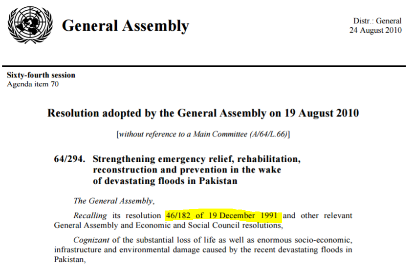
Figure 5 Reference to another document
In Figure 7, we see an example of a reference to another document. It is a reference to Resolution 46/182 of 19 December 1991. In the above example, the resolution (64/294) is published as a PDF24. You may mark it up as a reference and use the IRI to directly link Resolution 64/294 to Resolution 46/182:
<ref href="/akn/un/statement/deliberaton/un-ga/1991-12-19/46-182/">
Resolution 46/182 of 19 December 1991
</ref>
At run-time when converting the XML to a presentation format, the system will convert the IRI to a link by prefixing it with the appropriate base-authority resolver URL (e.g. https://resolver.akn4un.org/akn/un/statement/resolution/un-ga/1991-12-19/46-182/).
Point-in-Time References
The previous example was a reference to a work, typically General Assembly resolutions do not get amended. However, resolutions may amend other documents. For example, we have the FAO Resolution 8/201525 which amends the FAO Basic Texts.
Figure: FAO Resolution amending Basic Texts
As a result of this resolution, the Basic Texts (Rule XII sub-paragraph 10 (a) of the general rules of the organization26) of FAO were amended on 13 June 2015.
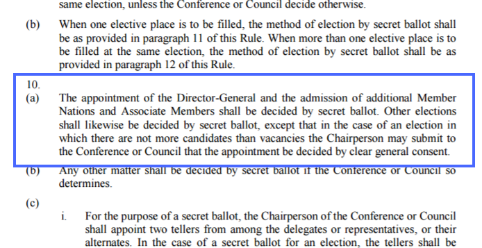Figure: FAO amended Basic Texts
So what we have is the version of the Basic Texts before it was amended and the version of the Basic Texts after it was amended. When there are multiple versions of a document, references are resolved in slightly differently ways.
<ref href="/akn/un/act/rule/fao-lo/1945-10-16/vol1-B-A-rule-xii/">
Rule XII of the General Rules of the Organization
</ref>
The above is a reference to the whole document, the resolved link would return the complete Rule XII including ALL its annexes, attachments (if they existed), and all the versions of it in all the languages.
Instead, if we had marked it up as an Expression IRI:
<ref href="/akn/un/act/rule/fao-lo/1945-10-16/vol1-B-A-rule-xii/eng">
Rule XII of the General Rules of the Organization
</ref>
This should resolve to “Rule XII of the General Rules of the Organization” in English to the current version in the context of the time the IRI was resolved.
So, for example, if the user had clicked on the link to Rule XII on June 11th 2015 – the system should resolve the above Expression IRI to the newest English version of the whole document of the Resolution as of June 11th 2015 (i.e. the version without the amendments). Similarly, if the user clicks on the link to Rule XII on June 16th 2015, or a later date– the system should resolve again to the newest English version of the whole document of the Resolution (i.e. the version with the amendments). So effectively how a reference is resolved and what it returns is a context dependent on the point in time when the reference was resolved.
References may also be made to a specific version of the Rule, for example:
<ref href="/akn/un/act/rule/fao-lo/1945-10-16/vol1-B-A-rule-xii/eng@2015-06-13/!main">
Rule XII of the General Rules of the Organization
</ref>
The above is a reference to the Amended version of the rule as of 13th June 2015.
In case it is necessary to point out to the original Expression you use this IRI annotation with @:
<ref href="/akn/un/act/rule/fao-lo/1945-10-16/vol1-B-A-rule-xii/eng@">
Rule XII of the General Rules of the Organization
</ref>
Local References to logical components
Within the same whole documents, references to logical components do not need the document IRI prefix, it is enough to just provide a local reference. The syntax is described below:
The character “!” and
Either:
The name “main” if the component is the only component or the main component in a hierarchy.
A unique name for the attachment, optionally followed by the number associated to this component in the document. If this number is provided, it is separated from the name with “_”.
For example in a resolution which has Annex 1, and there is a reference to Annex 1 from the main part of the document, the reference would look like this:
<ref href="!annex_1">
Annex 1
</ref>
Link Reference to a specific structural part of a document
We may also link to specific parts or fragments within a document. For example, Figure 8 (Reference to a paragraph in a resolution).
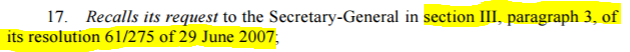
Figure 8 Reference to a paragraph in a resolution27
The absolute Expression level reference would look like:
<ref href="/akn/un/statement/resolution/un-ga/2007-06-29/61-2175/eng@!main#section_III__para_3">
section III, paragraph 3, of its resolution 61/2175 of 29 June 2007
</ref>
Clicking the above reference on a web presentation should take the user directly to the Section III Paragraph 3 of Resolution 61/2175 (in English). “section_III__para_3” is the @eId of Paragraph 3.
Note that you never link to items in the metadata block (<meta>), since those items are purely metadata and not shown to the user.
The above example is a global reference, since we are referring to a paragraph in a different document. If this was a link to a paragraph within the same document, say inside Resolution 61/2175 there is a local reference to Section II Paragraph 1, then this local reference would look like this:
<ref href="#section_II__para_1">
section II, paragraph 1
</ref>
This may also be a portion reference (for differences between a portion reference and a fragment reference. Please note that portion references are different from fragment references which use the “#” character to refer to specific parts of a document.
<ref href="/akn/un/statement/resolution/un-ga/2007-06-29/61-275/!main~section_3__para_3">
section III, paragraph 3, of its resolution 61/275 of 29 June 2007
</ref>
Here “section3__para_3” is the @eId value of Paragraph 3.
If the reference had been only to the resolution as a whole we would just have the document level IRI:
<ref href="/akn/un/statement/resolution/un-ga/2007-06-29/61-2175/!main">
Resolution 61/2175 of 29 June 2007
</ref>
Portion References
Portion references are a very specific kind of reference related to the <portion> documentType in Akoma Ntoso. Portions are sub-sets or fragments of an Akoma-Ntoso document, returned as a <portion> document. The naming convention uses a syntax that specifically supports portion documents, as they have a different functional aspect from typical link references.
Logically speaking typical link references involve locating the referenced document retrieving it and finding the local fragment reference within that document. The referenced document is always returned in its entirety.
Portion references on the other hand create a new document out of the referenced fragment specified in the IRI only, and return a brand new <portion> which has only the structure and content of the referenced fragment.
Portion references use a “~” character instead of the “#” character used in link references.
The syntax is described below:
Therefore, a Work-level IRI reference (or an Expression-level IRI reference) including a portion specification consists of the following pieces:
The IRI of the corresponding Work (or, respectively, of the corresponding Expression) as a whole,
The character “/” (required),
The name of the component (required),
The character “~” (required),
Either:
The @eId of the item in the document being requested, or
A pair of @eIds of the first and last elements of the sequence of parts being requested, separated by a dash and a arrow “->“.
component | allowed values | note |
IRI of the corresponding Work or Expression (required) | IRI value of the Work / Expression | Assuming the Work is the Original General Assembly Resolution no. 64/286 from 24 June 2010, then its Work IRI will be: /akn/un/statement/resolution/un-ga/2010-06-24/64-286 |
The character “/” (required) | “/” | This is a separator |
The character “!” followed by the name of the component or attachment (required) | “!{name}” | The {name} may be: -The name “main” if the component is the only component or the main component in a hierarchy -A unique name for the attachment, optionally followed by the number associated to this component in the document. If this number is provided, it is separated from the name with “_”. For instance: Reference to the main document of the Original General Assembly resolution no. 64/286 of 24 June 2010: /akn/un/statement/resolution/un-ga/2010-06-24/64-286/!main |
The character “~” (required) | This is a separator | |
- The @eId value of the element which contains the portion being requested, or - A pair of @eId values of the first and last element of the sequence of parts being requested, separated by a dash and an arrow : “->“. | “{@eId}” or “{@eId from}”->”{@eId to}” | For example, Portion Reference to the 8th paragraph of the main document of the Original General Assembly resolution no. 64/286 of 24 June 2010: /akn/un/statement/resolution/un-ga/2016-10-13/71-4/!main~para_8 (para_8 is the @eId value of paragraph 8) Portion Reference to paragraphs 8-15 of the main document of the Original General Assembly resolution no. 64/286 of 24 June 2010: /akn/un/statement/resolution/un-ga/2016-10-13/71-4/!main~para_8->para_15 (para_8 and para_15 are the @eId values of paragraph 8 and paragraph 15) For Manifestation level IRIs: The above will resolve to and is equivalent to the following Manifestation IRI: /akn/un/statement/resolution/un-ga/2016-10-13/71-4/eng@/!main~para_8->para_15.xml The above IRI should return a Portion document with the metadata of the Resolution being requested, and just the XML representations of Paragraph 8 to Paragraph 15 as its content in the body. |
NOTE: Portion references are different from fragment references which use the “#” character to refer to specific parts of a document.
For example, the following is a portion reference to Paragraph 8, it returns an Akoma Ntoso Portion document containing just Paragraph 8 and references that Paragraph:
/akn/un/statement/resolution/un-ga/2016-10-13/71-4/!main~para_8
The following is a fragment reference to Paragraph 8, it accesses Paragraph 8, within the context of the whole Akoma Ntoso document being referenced (and implies that the whole document has to be retrieved before resolving the reference):
/akn/un/statement/resolution/un-ga/2016-10-13/71-4/!main#para_8
The other difference between Portion and fragment references is that Portion references allow referencing a range of portions within a document ( e.g. !main~para_2->para_8 references Portions from Paragraph 2 to Paragraph 8).
URLs to other documents
You may also place references to non Akoma-Ntoso documents and URLs within AKN documents.
There are multiple ways of doing this. You may use the <a> tag:
Example, link to UN Resolutions web page:
<paragraph eId="goal_4__para_1">
<content>
<p>
The Sustainable development goals
<a href="http://www.undp.org/content/undp/en/home/sustainable-development-goals.html">website</a>
</p>
</content>
</paragraph>
You may also link to the external page via an indirect reference:
<paragraph eId="goal_4__para_1">
<content>
<p>
The Sustainable development goals
<ref eId="ref_2" href="#sdg_web" />
</p>
</content>
</paragraph>
With the actual url set in <otherReferences>:
<analysis source="#UN">
<otherReferences source="#UN">
<alternativeReference for="#ref_2" refersTo="#undpWeb" href="http://www.undp.org/content/undp/en/home/sustainable-development-goals.html"/>
</otherReferences>
</analysis>
When you have the URL referenced multiple times in the content, we recommend an indirect reference as it prevents repetition of the URL.
Other Reference Elements
References may be grouped in two different ways:
<mref> - This is just a container for a comma separated list of references (<ref>) in document.
<rref> - this allows referencing a range. E.g. <rref from="#sec_1" upTo="#sec_7" eId="rref_1">Sections 1 to 7</rref> , references sections 1 to 7 in the same document. <rref> may also be placed inside a <mref> reference grouping.
To group a set of <ref> or <rref> the element <mref> should be used.
Akoma Ntoso also has other referencing elements meant to address specific uses; their syntax is identical to <ref>.
<affectedDocument> : used to refer to a document affected by this document.
<relatedDocument> : used to refer to a document that this document is a report of.
<documentRef> : used in collection documents to include a document by reference.
The following table summarizes the different elements used for referencing.
<a> | <ref> | <rref> | <mref> | <affectedDocument> | <relatedDocument> | |
@href IRI pointer to a resource. | Required | Required | - | - | Required | Required |
@target the browser window in which to display the referred to item. | Optional | - | - | - | - | - |
@from An id reference to the initial provision in a range of referenced provisions. | - | - | Required | - | - | - |
@upTo An id reference to the last provision in a range of referenced provisions. | - | - | Required | - | - | - |
There are two additional attributes which act as references when used on other elements:
@alternativeTo (optional): an id reference to another element, which the element having this attribute is an alternative copy to, e.g. when a title is presented in multiple languages.
@refersTo: an id reference to an element in the metadata that is part of an ontology.
Tables
AKN adopts the XHTML 2.0 table syntax for its own tables. AKN provides <table>, <th>, <tr> and <td> elements to mark-up tables. In the example shown below, paragraph 3 contains a list and a subparagraph. The list contains two indents. The first indent contains a table.
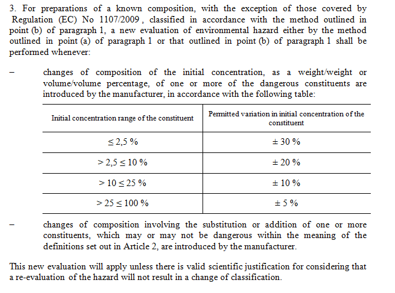
The content of the indent will be included in a single <p> element. The table will be included inside that <p> with a <popup> element.
The XML mark-up of the indent with the table will be the following:
<indent eId="...">
<content eId="...">
<p>changes of composition of the initial concentration, as a weight/weight or volume/volume
percentage, of one or more of the dangerous constituents are introduced by the
manufacturer, in accordance with the following table:</p>
<table eId="...">
<tr eId="...">
<th eId="...">
<p>Initial concentration range of the constituent</p>
</th>
<th eId="...">
<p>Permitted variation in initial concentration of the constituent</p>
</th>
</tr>
<tr eId="...">
<td eId="...">
<p>≤ 2,5 %</p>
</td>
<td eId="...">
<p>± 30 %</p>
</td>
</tr>
<tr eId="...">
<td eId="...">
<p>> 2,5 ≤ 10 %</p>
</td>
<td eId="...">
<p>± 20 %</p>
</td>
</tr>
<tr eId="...">
<td eId="...">
<p>> 10 ≤ 25 %</p>
</td>
<td eId="...">
<p>± 10 %</p>
</td>
</tr>
<tr eId="...">
<td eId="...">
<p>> 25 ≤ 100 %</p>
</td>
<td eId="...">
<p>± 5 %</p>
</td>
</tr>
</table>
</content>
</indent>
Element Foreign
Sometimes in a document you have presentation issues that have a very specific requirement, for instance, mathematical formulas that have well‐known standard XML vocabularies. For such scenarios, AKN provides the <foreign> element that may be used to wrap fragments of content that correspond to structures and data that are not currently managed by Akoma Ntoso. <foreign> may be used within block elements such as <content>, <intro>, and <wrapup>. Technically, it may also be used in block containers like the preface and within the preamble, but we have not seen any instance where there is such a use case.
It should be noted that foreign should only be used when Akoma Ntoso does not provide support for the particular notation, and should not be used as a means to simply include XML fragments from other vocabularies. So it is not correct to place HTML fragments here, as there is no feature of HTML that cannot be expressed in Akoma Ntoso, while MathML or CML(Chemical Markup Language) may be an appropriate choice as they do not have equivalent tags in AKN.
The <foreign> element is one of the few ways (along with <proprietary> and <presentation> to include elements from other namespaces within AKN documents.
For example, the following is a mathematical formula:
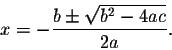
And may be expressed using MathML inside a <foreign> element in this way:
<content>
<p>...</p>
<math xmlns="http://www.w3.org/1998/Math/MathML">
<mrow>
<mi>x</mi>
<mo>=</mo>
<mfrac>
<mrow>
<mo form="prefix">−</mo>
<mi>b</mi>
<mo>±</mo>
<msqrt>
<msup>
<mi>b</mi>
<mn>2</mn>
</msup>
<mo>−</mo>
<mn>4</mn>
<mo>⁢</mo>
<mi>a</mi>
<mo>⁢</mo>
<mi>c</mi>
</msqrt>
</mrow>
<mrow>
<mn>2</mn>
<mo>⁢</mo>
<mi>a</mi>
</mrow>
</mfrac>
</mrow>
</math>
</content>
Authorial Notes
Authorial Footnotes in AKN4UN documents are marked-up using the <authorialNote> element. The <authorialNote> element has specific attributes to allow its use as footnote and is typically wrapped in a <sup> inline element.
@marker – this indicates the text to be shown in the superscript (<sup>). We do not set the text content in the <sup> element, instead we render the @marker value as the content of the <sup> during presentation time
@placement – this has prescriptive values provided by the schema: “side”, “left”, “right”, “bottom”, “inline”. It indicates a presentation instruction as to where the content of the authorial note should be shown.
The content of the footnote is stored within the <authorialNote> inline element. It may contain hierarchical elements, though typically you would just have a typographical paragraph.
NOTE: Footnotes may be editorial too, but in the context of the UN documents, all the footnotes are considered to be authorial. For this reason, we use the <authorialNote> element, rather than <noteRef> which is for an editorial footnote.
The example shown below contains two footnotes in the text that are rendered at the end of the page (@placement = “bottom”).
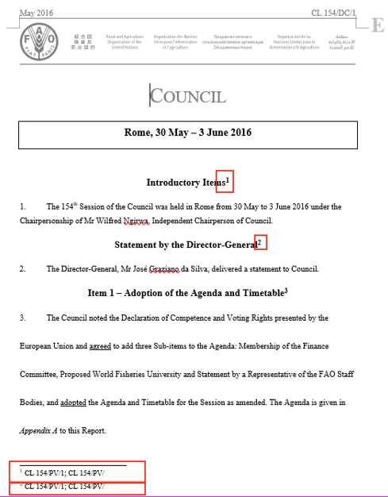
The XML mark-up for the first footnote is as follows:
<title eId="title_1">
<heading>Introductory Items<sup class="footnote">
<authorialNote eId="ftn0" marker="1" placement="bottom">
<p> CL 154/PV/1; CL 154/PV/</p>
</authorialNote>
</sup>
</heading>
<paragraph eId="title_1__para_1">
<num title="1.">1.</num>
<content>
<p>The 154<sup>th</sup> Session of the Council was held in Rome from 30 May to 3 June
2016 under the Chairpersonship of Mr Wilfred Ngirwa, Independent Chairperson of
Council.</p>
</content>
</paragraph>
</title>
<authorialNote> may also include complex structures using <quotedStructure>.
Images
Images and other media files may be included using the <img> element.
An example is shown below; the reference to the image is a manifestation reference:
<alinea eId="...">
<content eId="...">
<p>
<img src="att_4/image.png"/>
</p>
</content>
</alinea>
Omissions
The omission of text from a document is usually done using language such as ‘…’ or omissis. Akoma Ntoso uses the element <omissis> to specify that text at this location has been removed, either by amendment or merely for presentation purposes. For instance, it may be important to record the information in the XML document for record purposes, but not display it during presentation time. Such text should be placed within the <omissis> tag, so the presentation processor understands that the text within these tags should not be displayed.
Presentation Elements
Not all the formatted text fragments in documents may be reduced to their structural or semantic role, e.g. drop bold text which is just bolded text without any semantics, or drop-caps. Akoma Ntoso provides standard and generic elements that may meet the presentation requirements of a particular legal tradition, organizations, or medium.
It must be noted that, if the reason that determines a specific typographical presentation is due to “structural” or “semantic” role of a text fragment, the appropriate structural or semantic element must be used. For example, if some text is in italics, and it signifies a term in a document, then it is not a literal italic but something of semantic significance. In such cases, a semantic element needs to be used to identify the meaning of the text since it is not a literal italic.
Please note that the above elements should be used only for typographical formats that may have not already been identified (marked-up) by structural or semantic elements i.e. they do not have a significant semantic meaning, they are just literal text. Either the semantic/structural elements or the presentation elements must be used, but never both together on the same text fragment.
HTML Inline
This has been covered earlier, see 4.6.3 HTML Inline, page 64.
Presentation Elements
Since not all the formatted text fragments in documents may be reduced to their structural or semantic role; e.g. underlined text, text in italics or drop-caps, Akoma Ntoso provides standard and generic elements that may be used with CSS to meet the presentation requirements of a particular legal tradition, organizations, or medium.
Akoma Ntoso provides a few inline elements for the most basic typographical needs:
<span> for specifying any complex typographical characteristics. Typically, <span> is used with a corresponding @class attribute that specifies a typographical characteristic (e.g. perhaps text in the middle of a sentence that needs to be in a particular font size). <span> should not be confused with <inline> which has semantic connotations. If you have inline text with specific significance for exmple if you need to identify chemical names in inline text, then you should use <inline> with a @name attribute to mark-up such text instead of span.
<div> Instead of being used as a generic block, Akoma Ntoso uses div as a generic container (as in common practice). <div> is used any time you need to define a container not included in the regular vocabulary. <div eId="div_1" class="alignedRight"><p>Address: av. Smith</p><p>Name: mr. Brown</p></div>
Akoma Ntoso provides the following text containers for:
<ul> for unnumbered lists. Typically lists are semantic, so we do not recommend the use of <ul> in AKN4UN documents. Use <blockList> instead which is a semantic list.
<ol> for unnumbered list. We do not recommend using <ol> in AKN4UN documents, as the numbering is generated at runtime and not explicitly present in the content of the document. This may be a problem when you have to amend the document. We recommend the use of <blockList> instead, which allows explicit numbering.
<li> to mark-up individual items in a list. See the comments above for <ul> and <ol>.
<table> for tabular view of rows and columns of data cells (<tr>, <th>, <td>). It is possible to define a title of the table with the element <caption>. Akoma Ntoso does not include HTML's <thead> and <tfoot> elements for tables, instead you may use the <tr> tag with a particular class name to identify the header and footer rows. The table cells are also allowed to include block structures like <block>, <blockContainer>, <tblock>, etc. Structural semantic elements like <article> or <part> are not allowed.
Akoma Ntoso use the following HTML attributes:
@class is used to specify a CSS class for presentation;
@style is used to specify CSS attributes inline.
@title is used to specify additional information about an element, and is usually shown in a tooltip.
@href is used to refer to another document or provision.
@src is used when including or incorporating a resource contained in another file.
@alt is used to display text in case the referenced resource cannot be retrieved.
Note: While both Akoma Ntoso and HTML share the @name attribute, the usage is different.
Whitespaces
Whenever the white space is significant, content-editing applications must make use of the @xml:space attribute, according to the XML 1.0 specification for the white space handling. Usage of the attribute @xml:space will be enabled for all the elements. Content-editing applications are expected to make proper use of the @xml:space attribute, whenever the preservation of the white space is significant. Based on the Akoma Ntoso schema, the attribute with @preserve value will be placed on "block" elements.
Publication formats
Documents and organizations may have specific publications formats that need to be preserved, e.g. headers and footers on odd or even pages, line number, etc. The specifications of these requirements in Akoma Ntoso should be detailed in the <presentation> section of the metadata.
In some traditions, references are made using page and line number. To address this, Akoma Ntoso has the elements <eol> (end of line) and <eop> (end of page), to identify the end of the line and end of the page of the original paper manifestation of a document, to be used whenever it is likely/possible that references to the document will be made using page and line numbers.
It is then possible to better qualify them with these attributes:
@breakAt, which specifies the number of characters within the next word that the page (or line) actually breaks at;
@number, which specifies a page number or line number for the element, especially if we did not start at zero;
@breakWith, which stores the character used for the syllabication interruption (e.g. hyphen or dash).
Other attributes:
@title ― This attribute is used to specify additional information about an element, and is usually shown in a tooltip.
@alt ― This attribute provides text to display in case the referenced resource cannot be retrieved.
Note: While both Akoma Ntoso and HTML share the @name attribute, the usage is different.
If the title of the chapter is rendered in two lines, composed of the chapter number and the description. The semantic elements <num> and <heading> will be used and there is no need for adding an </EOL>:
The <eol/> (end of line) and <eop/> elements (end of page) may be used only if there is no other semantic element at the place where the "carriage return" or "page break" should occur.
22 Exception to that rule are some repeated or automatically generated fields like the page numbers in the header or the footer of the documents.
23 Note that this namespace IRI will likely change once the AKN schema is formally released by OASIS. This document reflects the current namespace IRI in use.
25 http://www.fao.org/3/a-mo153e.pdf, page 24
26 http://www.fao.org/legal/home/basic-texts/en/ , pdf page 28